JavaScript设计模式读书笔记(5)
技巧型设计模式
技巧型设计模式是通过一些特定技巧来解决组件的某些方面的问题，这类技巧一般通过实践经验总结得到。
链模式
链模式(Operate of Responsibility):通过在对象方法中将当前对象返回，实现对同一个对象多个方法的链式调用。从而简化对该对象的多个方法的多次调用时，对该对象的多次引用。
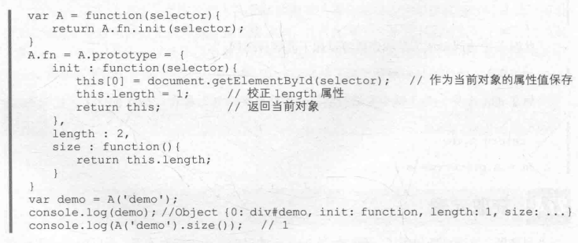
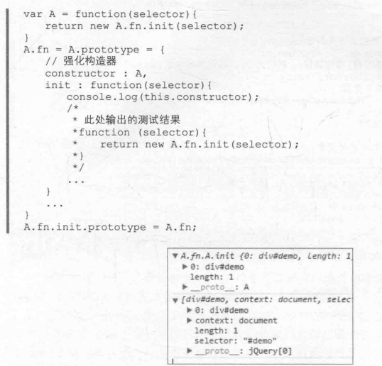
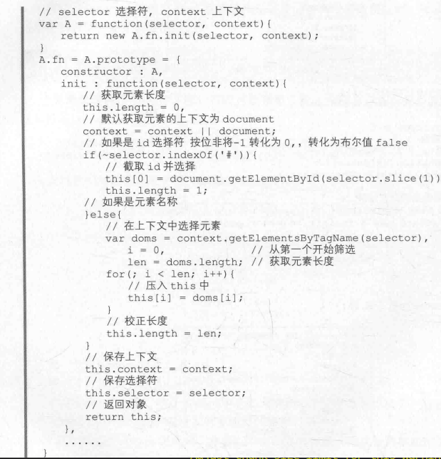
jOuery获取的元素更像一个数组，上面框架返回的更像是一个对象
原因：由于JavaScript 的弱类型语言，并且数组、对象、函数都被看成是对象的实例，所以JavaScript中并没有一个纯粹的数组类型。而且JavaScript引擎的实现也没有做严格的校验，也是基于对象实现的。一些浏览器解析引擎在判断对象是否是数组的时候不仅仅判断其有没有length 属性，可否通过‘![索引值]’方式访问元素，还会判断其是否具有数组方法来确定是否要用数组的形式展现，所以只需要在 A.fn中添加几个数组常用的方法来增强数组特性就可以解决问题了
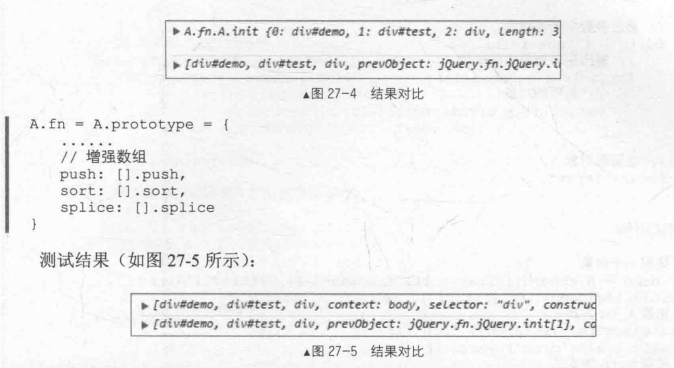
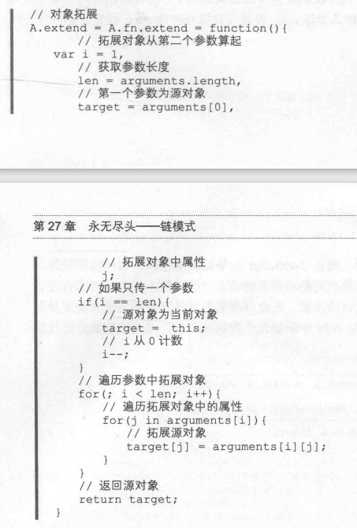
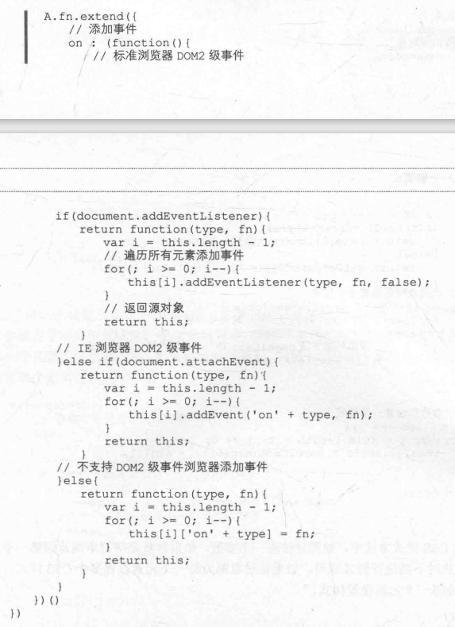
委托模式
委托模式(Entrust):多个对象接收并处理同一请求，他们将请求委托给另一个对象统一处理请求。
委托模式可以优化页面中事件的数量。
事件委托是将子元素的事件委托给父元素，然后通过事件冒泡传递的，再通过判断事件源的某种特性来执行某一业务逻辑
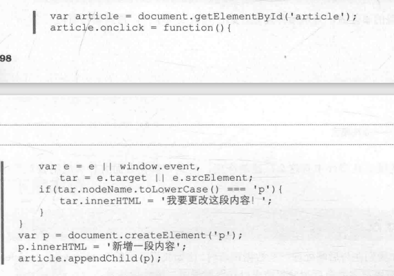
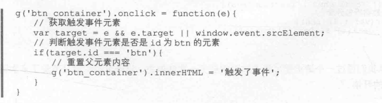
数据访问对象模式
数据访问对象模式(Data access object-DAO):抽象和封装对数据源的访问与存储，DAO通过对数据源链接的管理方便对数据的访问与存储。
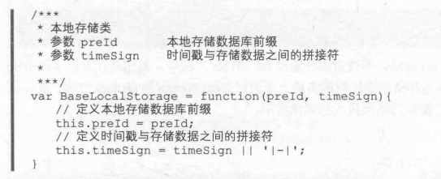
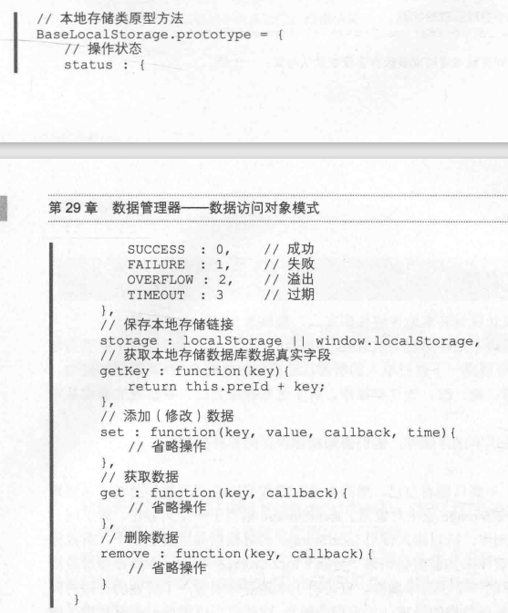
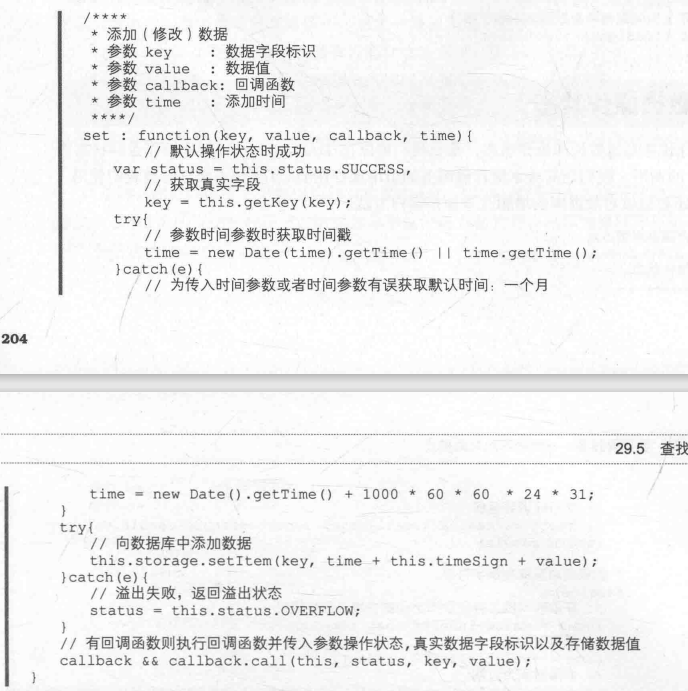
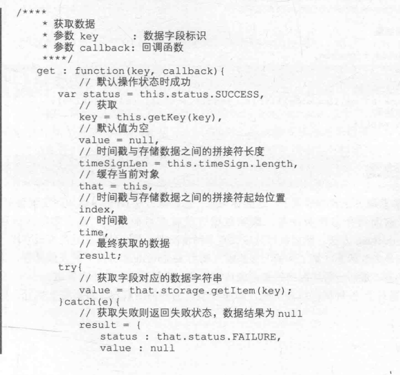
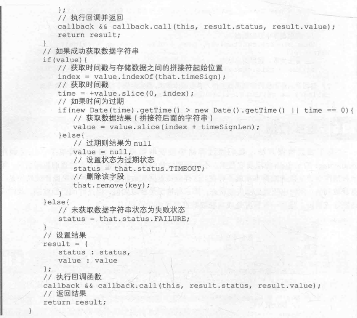
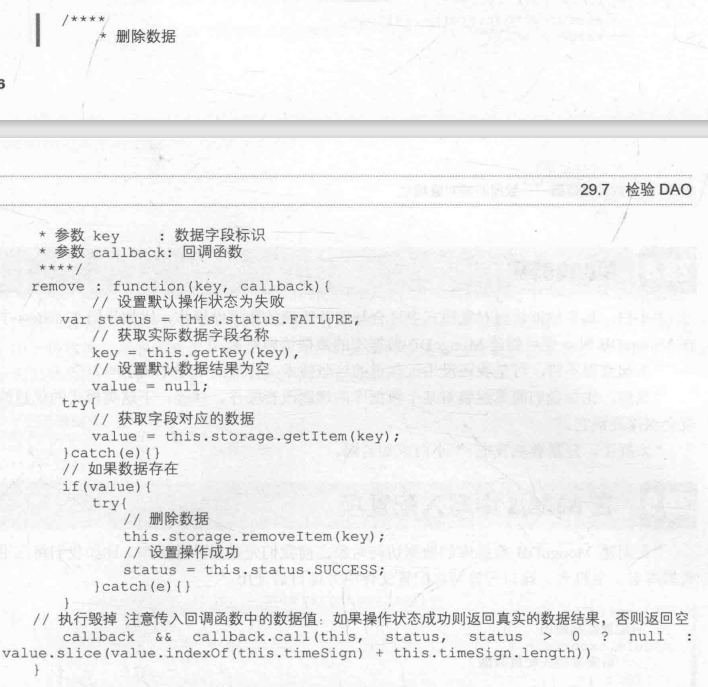
节流模式
节流模式(Throttler):对重复的业务逻辑进行节流控制，执行最后一次操作并取消其他操作，以提高性能。
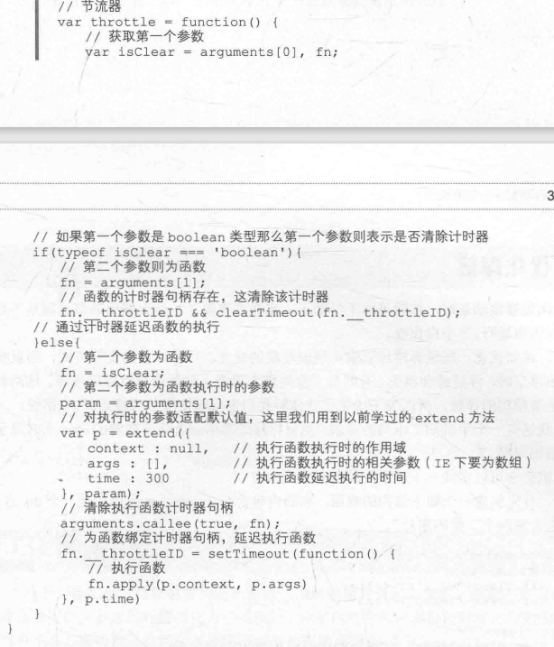
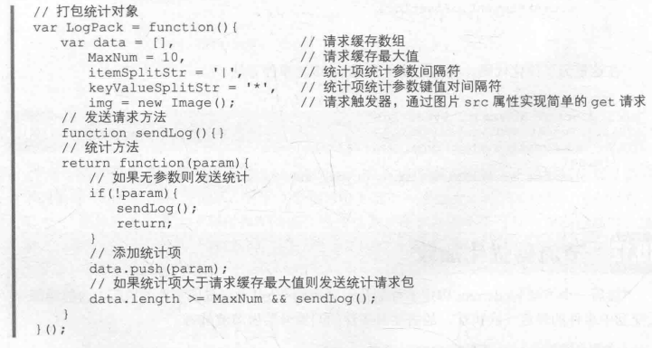
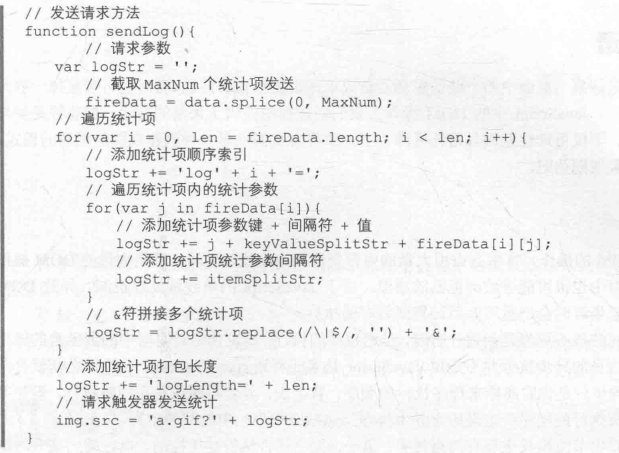
节流模式的核心思想是创建计时器，延迟程序的执行。这也使得计时器中回调函数的操作异步执行(这里的异步执行并不是说JavaScript是多线程语言，JavaScript 从设计之初就是单线程语言，异步只是说脱离原来程序执行的顺序,看上去，异步程序像是在同时执行。但是某一时刻，当前执行的程序一定是所有异步程序(包括原程序)中的某一个)。
节流模式优势
(1)第一，程序能否执行是可控的。执行前的某一时刻是否清除计时器来决定程序是否可以继续执行
(2)第二，程序是异步的。由于计时器机制，使得程序脱离原程序而异步执行(当然随着worker技术的兴起，也可开启多线程模式实现)，因此不会影响后面的程序的正常执行。在其他方面，比如对异步请求(ajax)应用节流，此时可以优化请求次数来节省资源。
简单模板模式
简单模板模式(Simple template):通过格式化字符串拼凑出视图避免创建视图时大量节点操作。优化内存开销。
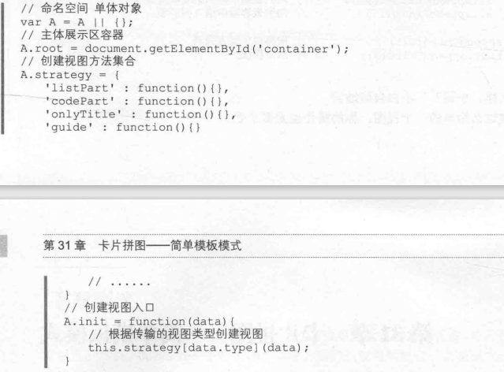
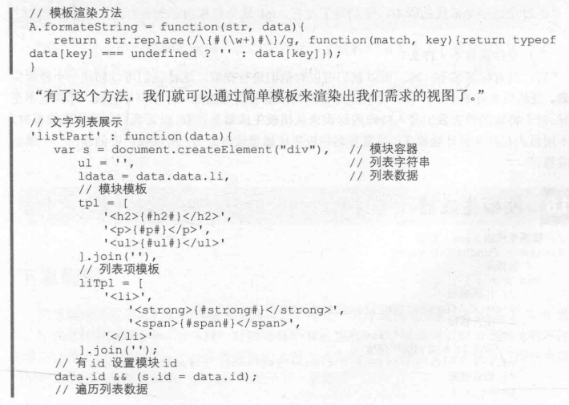
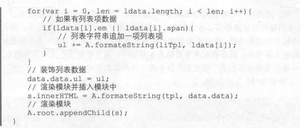
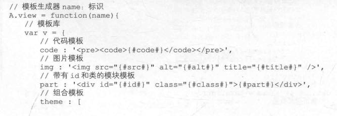
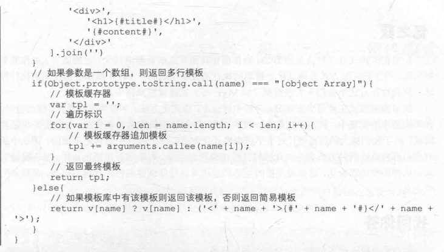
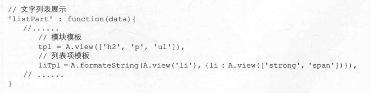
惰性模式
惰性模式(layier):减少每次代码执行时的重复性的分支判断，通过对对象重定义来屏蔽原对象中的分支判断。
两种实现方式
(1)第一种就是在文件加载进来时通过闭包执行该方法对其重新定义。不过这样会使页面加载时占用一定资源。
(2)第二种方式是在第一种方式基础上做一次延迟执行，在函数第一次调用的时候对其重定义。这么做的好处就是减少文件加载时的资源消耗，但是却在第一次执行时有一定的资源消耗
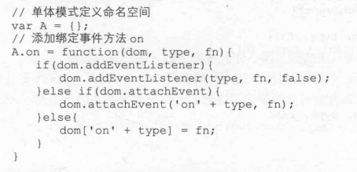
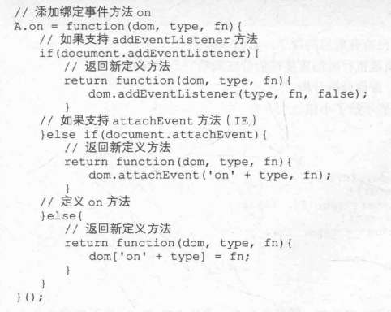
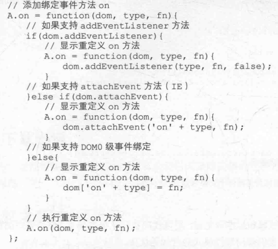
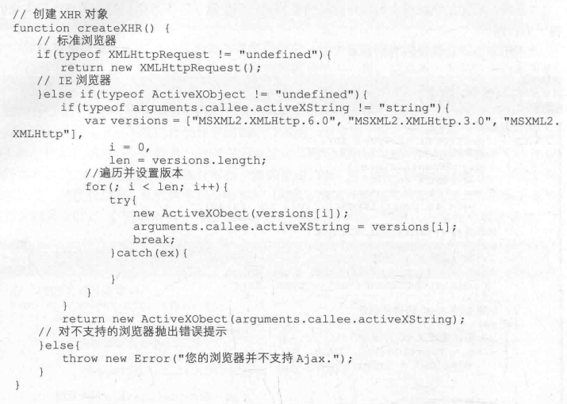
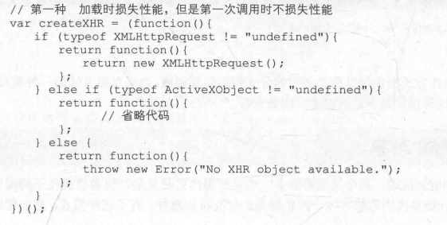
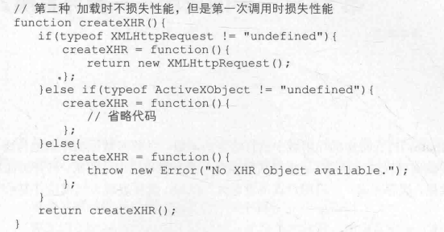
参与者模式
参与者(participator):在特定的作用域中执行给定的函数，并将参数原封不动地传递。
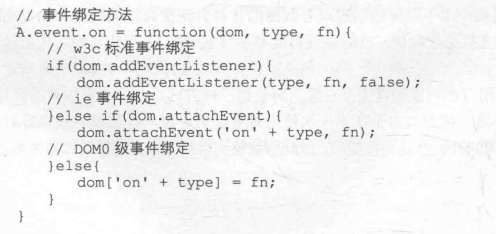
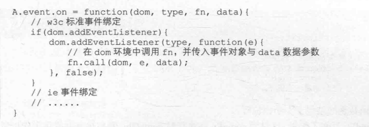
函数柯里化的思想是对函数的参数分割，这有点像其他面向语言中的类的多态，就是根据传递的参数不同，可以让一个函数存在多种状态，只不过函数柯里化处理的是函数，因此要实现函数的柯里化是要以函数为基础的，借助柯里化器伪造其他函数，让这些伪造的函数在执行时调用这个基函数完成不同的功能
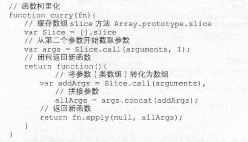
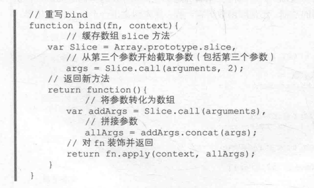
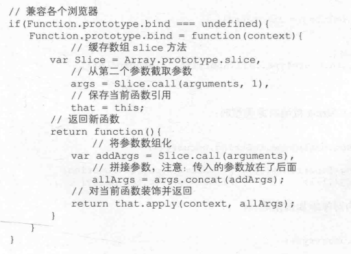
参与者模式实质上是两种技术的结晶，函数绑定和函数柯里化
(1)对于函数绑定，它将函数以函数指针(函数名)的形式传递，使函数在被绑定的对象作用域中执行，因此函数的执行中可以顺利地访问到对象内部的数据，由于函数绑定构造复杂，执行时需消耗更多的内存，因此执行速度上要稍慢一些。不过相对于解决的问题来说这种消耗还是值得的，因此它常用于事件，setTimeout或setInterval等异步逻辑中的回调函数。
(2)对于函数柯里化即是将接受多个参数的函数转化为接受一部分参数的新函数,余下的参数保存下来，当函数调用时，返回传入的参数与保存的参数共同执行的结果。通常保存下来的参数保存于闭包内,因此函数柯里化的实现要消耗一定的资源。函数的柯里化有点类似类的重载,不同点是类的重载是同一个类对象,函数的柯里化是两个不同的函数。
随着函数柯里化的发展，现在又衍生出一种反柯里化的函数，其目的是方便我们对方法的调用
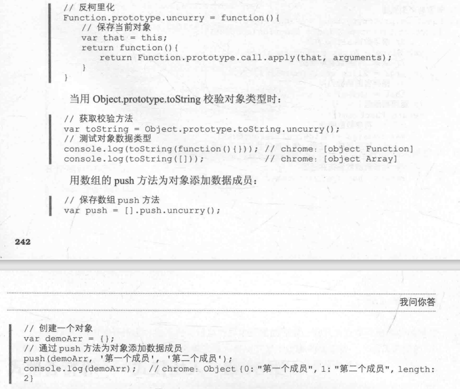
等待者模式
等待者模式(waiter):通过对多个异步进程监听，来触发未来发生的动作。
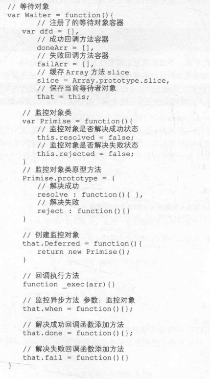
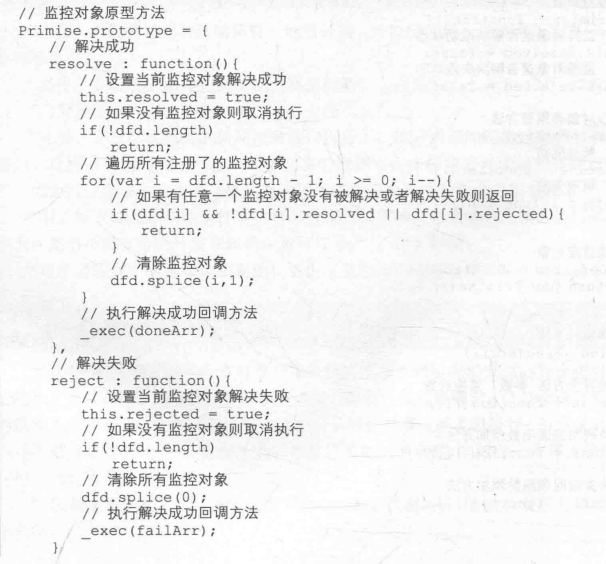
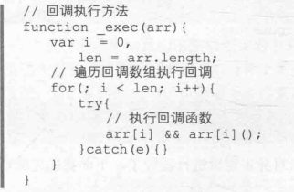
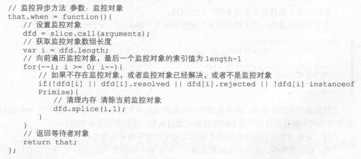
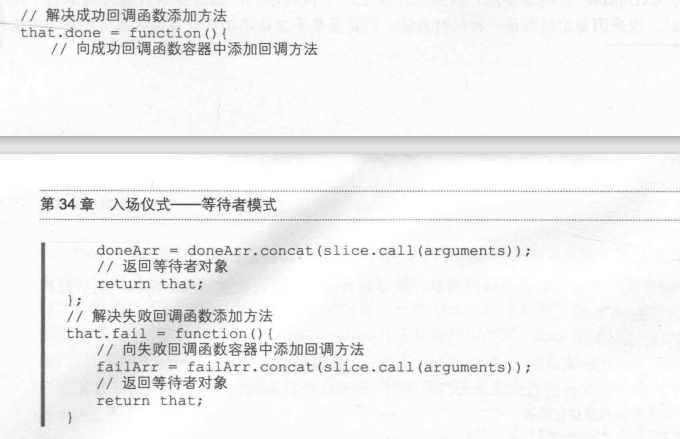
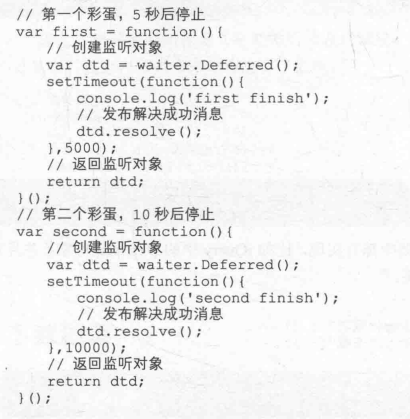
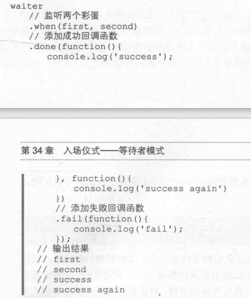
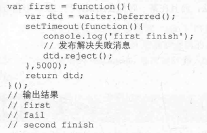